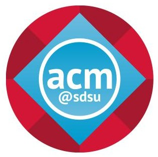
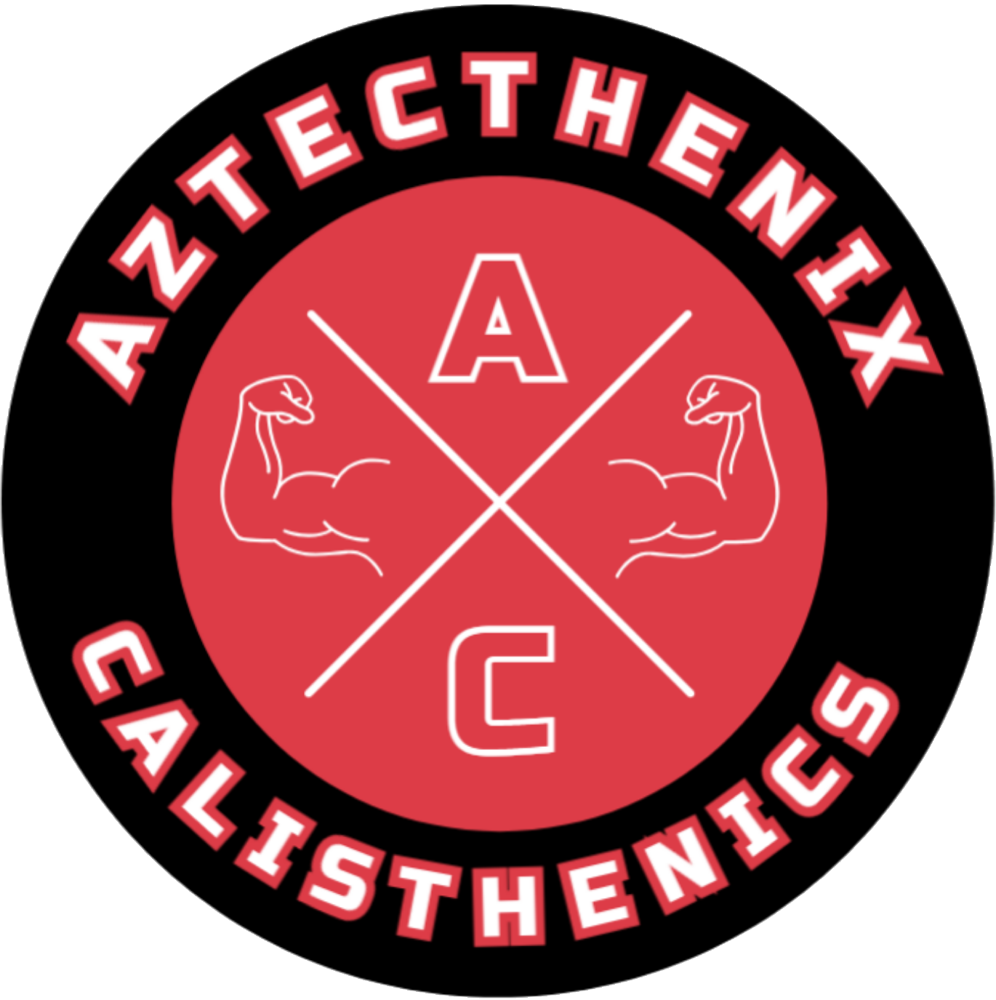

Developer Info
Leland Cuellar
Student at San Diego State University
Computer Science Major | Math Minor | MSLC Tutor | ACM @ SDSU | WCO @ SDSU | Calisthenics Athlete


Links: Workspace Marketplace listing, Source code
About
I’ve never been very good at art.
Drawing, playing music, or crafting never called to me. Coding, however...changed my life.
It wasn’t until my first coding class in 7th grade (Python) that I experienced the joy and passion that comes with being able to express yourself and your creativity. Not only did I immediately fall in love with coding because it allowed me to express myself, but it was also all about problem-solving and thinking logically, just like one of my other passions, math. I went out of my way to add cool extra effects to all my coding assignments because I enjoyed it so much.
Suffice it to say, it was my favorite class, and I have continued to love it since. Sadly, I went to a small high school, and coding wasn’t offered as a class. The best I could do was digital art and mixed media, where we did art projects using p5.js. Luckily, I had a cool teacher, who allowed me to go off learning on my own and do much trickier and more technically difficult projects than the rest of the class.
Now, as a student at SDSU, I’m majoring in Computer Science, and loving every second of it. I am also still exploring programming on my own, which is currently App Development in Android Studio using Kotlin. I’m still in the learning phase, but someday, I plan to create my own app and publish it to the Google Play Store.
I am currently looking for a Software Engineering, Full Stack, AI/ML, or Quality Assurance Tester Internship so that I can learn from industry professionals and get some experience under my belt.